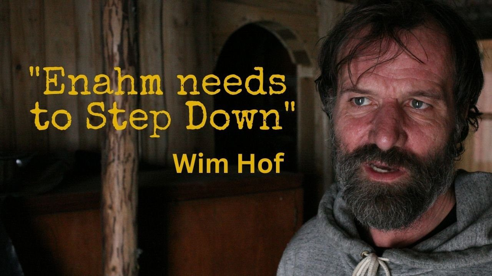
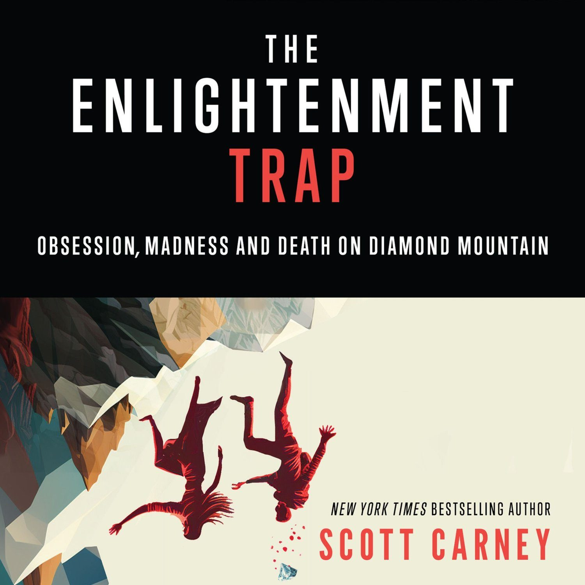

A few days ago I put out a YouTube video titled "How Wim Hof Lost His Method" that started an important conversation about the business practices of all things Wim Hof. Within hours of the video going online, Wim Hof's son Enahm Hof started issuing copyright take down and privacy violation notices through YouTube's legal complaint system. Right now about half of my YouTube channel is offline, but the video has been mirrored in a few places including on my Instagram account and on the Internet Archive. Enahm is systematically attempting to remove my presence from the internet, has issued me threatening letters, is impersonating his father and (I think) his sister in online forums, and is generally not being a nice guy.
Journalism is a protected category of speech in the United States and (most of) Europe. Innerfire's misuse of YouTube's the content moderation system is explicitly against the site's terms of service. I am in consultation with my legal team for how to best respond.
Understandably, Wim is in a difficult spot. The day after it came out he said that the video was instigating necessary change within the organization--with plans that would reform payment practices, ownership of the company and other things. He urged me forward. This is an on-the-record recording of our conversation.
Since then, however, his tone has changed a little bit. Now he's saying that I am a journalist "on a vendetta" against Enahm. His language closely mirror's his son's. I expect they talk frequently. In my first video he said that day-to-day operations overwhelm him and he doesn't want to be involved in his social media presence or the business itself. Wim is isolated and wants a way out. I have suggested several ways that we could de-escalate the situation, but Wim says he doesn't want to be part of it, and that I should speak directly to Enahm. Unfortunately I am having no luck with productive conversations with Enahm.
This has put me in a bit of a pickle.
I do worry, however, that escalating from here could result in the removal of the official Wim Hof YouTube channel. This is not my goal. But there might not be another choice. I would like to see the problems within the WHM organization corrected, while still being able to continue my journalism career without further harassment. Ideally we could get to a place where Innerfire acknowledges that my reporting alerted them to problems in the organization and everyone could have a cooling-off period before doing actual damage to a method that I have practiced for ten years.
I do not know where any of this is going to go in the future. I pray that we are able to come up with an amicable solution and get back to our regular duties of ice baths and breathwork.
Why Am I Releasing The Enlightenment Trap Now?
Some people have suggested that the timing of my video on the Wim Hof Method was suspiciously close to the re-launch of my book The Enlightenment Trap. Perhaps they think that this was all an attention-grabbing ploy to sell millions of books at the expense of Wim's business. I want to tell you officially that there is in fact a relationship between between the book release and my video, but it's more complicated than it appears.
Let me explain.
I originally met Wim in February 2013. I had just written an article in Playboy about how a charismatic Buddhist teacher's meditation program led to the death of Ian Thorson in the Arizona desert. His death closely mirrored the death of my student Emily O'Connor at a meditation retreat in India several years earlier. Both Emily and Ian believed they were on the cusp of enlightenment and could achieve superpowers. I expected Wim would be a similar-sort of questionable guru and I planned to debunk him--thus beginning a career as someone who takes down charlatans professionally. It just so happened that Wim messed up my plans because his methods actually worked. My story in Playboy ended up launching his career. A few months later he appeared in a VICE documentary, and from there an appearance on Joe Rogan. I was really happy about the attention he was getting, and knew I would one day write a book, but I couldn't do it right away.
I first had to fulfill my book contract for A Death on Diamond Mountain on the dark side of meditation. So I spent a few more years working on that project while also practicing the WHM daily. The book came out in 2015 to great reviews. Unfortunately it didn't sell particularly well. I managed to acquire back the rights to from Penguin, but the audiobook rights were locked up by another publisher until last year.
In 2017, What Doesn't Kill Us became a NYT bestseller, but I always felt that it didn't quite made sense unless people also understood my earlier project. They're connected at a very deep level.
In August 2022 I decided that I would finally re-record the audiobook for The Enlightenment Trap and I spent several weeks in a recording studio when a strange thing happened. See, I hadn't actually re-read it in seven years. There were parallels between the protective cult-like practices at Diamond Mountain University and what I was seeing in the leadership of the Wim Hof community. Something wasn't sitting with me right, but I didn't dwell on it too much. I set a release date for January 15th, 2023 and went back to work.
Then, when I put a video out about how practicing the Wim Hof Method for (almost) ten years had changed my life that included two very mild criticism of Innerfire, I started to get aggressive and threatening messages from Enahm Hof. His tone echoed the voices I'd just recorded in the sound studio just a month earlier. I started talking to WHM instructors and I saw what I worried that was history repeating itself. The more I investigated, the more I knew I had to put out a new video. As I mentioned in the video they took down, I don't think Innerfire is a cult. I don't think Wim Hof is a guru proclaiming enlightenment. But the mechanisms of control that Enahm uses are, in my opinion, similar.
Maybe I was being naïve, but I didn't really expect the video "How Wim Hof Lost His Method" would be such a flash point for the community. I hoped that it would spark some change, but I didn't expect a full-scale onslaught on my professional reputation. If I had, I would have delayed the video's release until afterwards so that I could focus on launching The Enlightenment Trap properly.
A few people in the Wim Hof community (mostly Enahm, but others as well) are saying that "I'm just in this for the money." I need to respond to this directly.
I do of course recognize that there is crossover between the two projects. It's also true that I am an author and I make my living selling books. I absolutely want you to buy my book. Indeed, I want attention on all of my projects.
But the reason I tell these stories doesn't stem from purely financial motives. You might be surprised that I only earn $4-$7 on any book I sell. Being an author isn't an especially lucrative career. I write because I deeply care about the subjects. I think they help improve the world. There are themes that connect them. More than money, I want people to talk about the things I write about and let my research inform their view of the world. I don't care if you get my books from a library or borrow them from a friend. I don't get too upset if you pirate them, either. The payoff for me are the letters that I get from my readers about on my work has changed their lives. Thank you for being part of that journey.
The Enlightenment Trap: Obsession Madness and Death on Diamond Mountain comes out on January 15, 2023. The audiobook and kindle edition are available now for pre-order.
